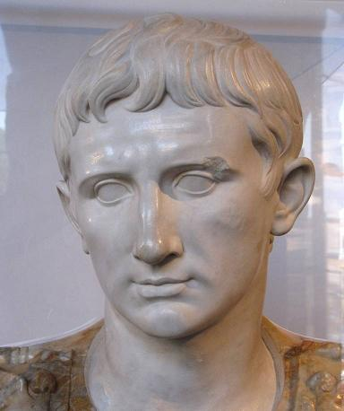
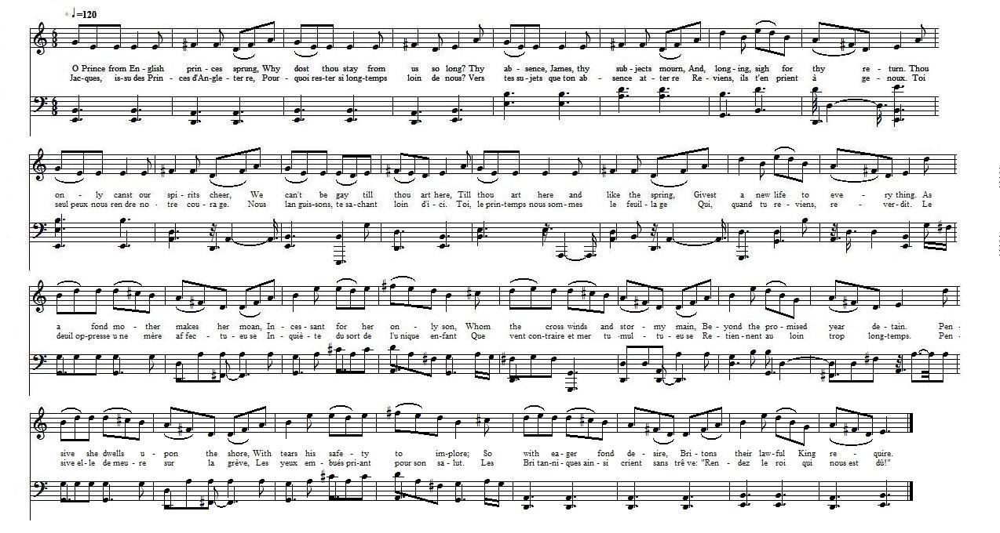

Ode 4.5 of Horace imitated
Imitation de l'Ode IV, 5 d'Horace
from The MSS at Towneley Hall page 41 in the "English Jacobite Ballads, Song
from the MS at Towneley Hall" by A.B. Grosart (1877), page 41.
Tune - Mélodie
No tune - Replaced here by "The Hearty Boys of Ballymore"
|
To the tune:
Ode is a type of lyrical verse. A classic ode is structured in three major parts: the strophe, the antistrophe, and the epode. It is an elaborately structured poem praising or glorifying an event or individual, describing nature intellectually rather than emotionally. The Greek odes did not lose their musical quality; they were originally a sung poem sung accompanied by an orchestra. As time passed on, they gradually became known as simple poems whether sung or recited. The written ode, as it was practiced by the Romans, returned to the Greek lyrical form. The odes of Horace deliberately imitated the Greek lyricists such as Alcaeus and Anacreon, and the poetry of Catullus was particularly inspired by Sappho. Medieval melodists and Renaissance polyphonists repeatedly endeavoured to set music to these authors' poems: the "Melopoiae" printed at Augsbourg in 1507; Judenkunig's "Lute Book", 1523; Frisius's "Isagoge", 1555; "Odes" set to music by Goudimel, published by Duchemin, Paris, 1555. "Horatii Odae Sex fidibus vocalis musicae restitutae" composed by Paganelli in Padua c; 1740. Source: Dictionnaire de Métronimo: Link http://dictionnaire.metronimo.com/index.php?a=list&d=1 No tune is directed in the MS to be sung to the present ode. The background tune to which the lyrics (very roughly) scan is "The hearty Boys of Ballymore" (an Irish tune from South Sligo, sequenced by Ch. Souchon). |
 |
A propos de la mélodie:
L'Ode est un type particulier de poésie lyrique qui se compose, classiquement, d'une strophe, d'une antistrophe et d'une épode. C'est un poème littéraire à la gloire d'un événement ou d'une personnalité, où la description de la nature est plus intellectuelle qu'émotionelle. Les odes grecques ne perdirent jamais leur caractère musical; elles étaient à l'origine un poème chanté avec un accompagnement d'orchestre. Plus tard le genre évolua vers le simple poème chanté ou récité. Chez les Latins, les poètes, Horace en particulier, écrivaient sous les vocables d'ode et d'épode des pièces purement littéraires, imitant plus ou moins les modèles grecs, Alcée, Anacréon et, dans le cas de Catulle, Sapho. Les mélodistes du moyen âge et les polyphonistes de la Renaissance essayèrent plusieurs fois de mettre ces auteurs en musique: les "Melopoiae", imprimées à Augsbourg en 1507, le "Livre de luth" de Judenkunig, 1523; l'"Isagoge" de Frisius, 1555; "Odes" mises en musique par Goudimel publiées chez Duchemin à Paris, 1555. Vers 1740, Paganelli, de Padoue, publia "Horatii Odae Sex fidibus vocalis musicae restitutae"... Source: Dictionnaire de Métronimo: Lien vers le dictionnaire http://dictionnaire.metronimo.com/index.php?a=list&d=1 Aucune mélodie n'est indiquée dans le manuscrit pour la présente ode. Le fond sonore qui épouse (très grossièrement la traduction française) est "Les braves garçons de Ballymore" (une mélodie irlandaise du South Sligo, arrangée par Ch. Souchon). |
|
Q. Horatii Flacci Carminum Liber Quartus: Oda Quinta
Ad Augustum 1. Divis orte bonis, optime Romulae custos gentis, abes iam nimium diu; maturum reditum pollicitus patrum sancto concilio, redi. 2. lucem redde tuae, dux bone, patriae: instar veris enim vultus ubi tuus adfulsit populo, gratior it dies et soles melius nitent. 3. ut mater iuvenem, quem Notus invido flatu Carpathii trans maris aequora cunctantem spatio longius annuo dulci distinet a domo, 4. votis ominibusque et precibus vocat, curvo nec faciem litore dimovet: sic desideriis icta fidelibus quaerit patria Caesarem. 5. tutus bos etenim rura perambulat, nutrit rura Ceres almaque Faustitas, pacatum volitant per mare navitae, culpari metuit fides, 6. nullis polluitur casta domus stupris, mos et lex maculosum edomuit nefas, laudantur simili prole puerperae, culpam poena premit comes. 7. quis Parthum paveat, quis gelidum Scythen, quis Germania quos horrida parturit fetus, incolumi Caesare? quis ferae bellum curet Hiberiae? 8. condit quisque diem collibus in suis, et vitem viduas ducit ad arbores; hinc ad vina redit lactus et alteris te mensis adhibet deum; 9. te multa prece, te prosequitur mero defuso pateris et Laribus tuum miscet numen, uti Graecia Castoris et magni memor Herculis. 10. 'longas o utinam, dux bone, ferias praestes Hesperiae!' dicimus integro sicci mane die, dicimus uvidi, cum sol Oceano subest. |
HORACE: ODES AND EPODES - BOOK IV - Ode 5
To Augustus 1. Best guardian of Rome's people, dearest boon Of a kind Heaven, thou lingerest all too long: Thou bad'st thy senate look to meet thee soon: Do not thy promise wrong. 2. Restore, dear chief, the light thou tak'st away: Ah! when, like spring, that gracious mien of thine Dawns on thy Rome, more gently glides the day, And suns serener shine. 3. See her whose darling child a long year past Has dwelt beyond the wild Carpathian foam; That long year o'er, the envious southern blast Still bars him from his home: 4. Weeping and praying to the shore she clings, Nor ever thence her straining eyesight turns: So, smit by loyal passion's restless stings, Rome for her Caesar yearns. 5. In safety range the cattle o'er the mead: Sweet Peace, soft Plenty, swell the golden grain: O'er unvex'd seas the sailors blithely speed: Fair Honour shrinks from stain: 6. No guilty lusts the shrine of home defile: Cleansed is the hand without, the heart within: The father's features in his children smile: Swift vengeance follows sin. 7. Who fears the Parthian or the Scythian horde, Or the rank growth that German forests yield, While Caesar lives? who trembles at the sword The fierce Iberians wield? 8. In his own hills each labours down the day, Teaching the vine to clasp the widow'd tree: Then to his cups again, where, feasting gay, He hails his god in thee. 9. A household power, adored with prayers and wine, Thou reign'st auspicious o'er his hour of ease: Thus grateful Greece her Castor made divine, And her great Hercules. 10. Ah! be it thine long holydays to give To thy Hesperia! thus, dear chief, we pray At sober sunrise; thus at mellow eve, When ocean hides the day. Translated by Pr. John Conington (1865) |
Horace: Odes et Epodes: Livre 4, Ode 5
A Auguste 1. Fils des dieux bons, toi du saint Capitole Le sûr gardien, au loin c'est trop rester: Nos sénateurs reçurent ta parole D'un prompt retour, viens l'acquitter. 2. A ton pays, grand chef, rends sa lumière. Dès que ta face, à l'instar du printemps, Reluit sur nous, l'heure passe légère Les cieux brillent plus éclatants. 3. Comme une mère appelant par ses larmes, Par mille vœux, son tendre jouvenceau, Que le Notus, depuis trois ans d'alarmes, Sépare de son doux berceau, 4. Tout au delà des ondes de Carpates; La malheureuse a toujours l'œil au port Telle, ô César, ta Rome non ingrate Te redemande avec transport. 5. Car, grâce à toi, le bœuf erre tranquille, Cérès partout donne une ample moisson; Le nautonier vogue en paix d'île en île; L'Honneur rougirait d'un soupçon. 6. Du chaste hymen s'éloigne l'adultère; Les mœurs, les lois ont le vice banni. D'enfants à lui s'enorgueillit le père; Sans retard le crime est puni. 7. Qui donc craindrait Parthes, Gélons ensemble ? Qui les guerriers monstrueux des Germains, Tant que César reste debout ? Qui tremble Aux chocs espagnols et romains ? 8. Chacun s'enfonce en ses vertes collines, Va marier la vigne avec l'ormeau, Puis, retournant aux liqueurs purpurines, T'invoque, à table, en dieu nouveau. 9. De la patère une sainte allégresse Répand le vin ; à nos divinités S'adjoint la tienne: ainsi jadis en Grèce Castor, Hercule étaient fêtés. 10. « Oh ! puisses-tu, doux chef, sur l'Hespérie Régner longtemps ! » Voilà notre oraison, Dès l'aube, à jeun, et de même en frairie, Quand Phébus plonge à l'horizon. Traduit par Ulysse de Séguier, 1883 |


|
The 5th Ode of the 4th Book of Horace immitated.
Ode. 1. O Prince from English Princes Sprung, [1] Why does thou stay from us so long; [2] Thy Absence, James, thy Subjects mourn, [3] And longing sigh for thy return. 2. Thou only canst our Spirits Chear, We can't be gay till thou art here, Till thou are here & like the Spring, Givest a new life to every thing. 3. As a fond Mother makes her moan, Incessant for her only Son, Whom the cross winds & Stormy main, Beyond the promised year detain. 4. Pensive she dwells upon the Shore, With Tears his safety to implore; So with eager fond desire, Britons their lawful King require. 5. Our Envious neighbours puff'd with pride, May now with ease our Schemes deride, And scoffingly rejoice when told, Our Senates bribed & places Sold. 6. Blessed with thy mild and equal reign, We shall our freedom boast again, Oppressive Armies shall not stand, Nor Alien Fools devour our Land. 7. United in thy righteous Cause, We shall impose on Europe Laws, The Belgian Brutes shall homage pay, [4] And own our Title to the Sea. 8. Justice that long from us is fled, Shall rear again her Lawful Head; All party rage & frauds shall cease, All shall be harmony & peace. 9. Fly speedy then & succour bring, Too long we've borne the foreign King, 'Tis time t' enjoy our rights & thee, From fetters & from Taxes free. 10. What e'er we do, what e'er we are, To Heaven we dayly send this prayer, " Restore our Monarch to his throne, " And send these booby Germans home. Source: From "English Jacobite Ballads...from the MS at Towneley Hall" by A.B. Grosart (1877), page 4. |
Imitation de la 5ème Ode du IVème Livre d'Horace.
Ode 1. Jacques, [3] issu des Princes d'Angleterre, [1] Pourquoi rester si longtemps loin de nous? [2] Vers tes sujets que ton absence atterre Reviens, ils t'en prient à genoux. 2. Toi seul peux nous rendre notre courage. Nous languissons, te sachant loin d'ici. Toi, le printemps, nous sommes le feuillage Qui, quand tu reviens, reverdit. 3. Le deuil oppresse une mère affectueuse Inquiète du sort de l'unique enfant Que vent contraire et mer tumultueuse Retiennent au loin trop longtemps. 4. Pensive, elle demeure sur la grève, Les yeux embués priant pour son salut. Les Britanniques ainsi crient sans trêve: "Rendez le roi qui nous est dû!" 5. Car nos voisins tout gonflés d'arrogance Impunément se moquent de nos plans. Se réjouissant de voir vendus nos places Et nos députés à l'encan. 6. Si nous avions les bienfaits de ton règne, Nous aurions la liberté, de surcroît. Les hordes de l'oppression nous aliènent: Elles s'enfuiraient devant toi. 7. Tous à ta cause unissant nos suffrages A l'Europe imposerions notre loi. Les brutes belges nous rendraient hommage [4] Nous qui de nos mers sommes rois. 8. La Justice dès longtemps nous déserte. Elle nous reviendrait enorgueillie. Fraude et factions hâtèrent notre perte. Place à la paix, à l'harmonie! 9. Vite accours donc nous apporter ton aide! C'en est assez de cet étrange roi. Il est temps qu'impôts et entraves cèdent La place à toi-même et au droit. 10. Nous qui voguons, tous dans la même barque, Formulons la même supplication: "O Dieu, rendez son trône au vrai monarque; Renvoyez chez lui le Teuton!" (Trad. Christian Souchon (c) 2011) |
|
[1]
O Prince
, etc.: The wonder is that, born in Rome as "great Charles " was, the fact was not more turned to account to catch up and apply Horatian compliments. The explanation is to be found in the anxiety to assert the British origin of the Stuarts as against the (alleged) foreign blood of the House of Hanover.
[2] "does " for " dost ": found elsewhere, and frequently in contemporaries. Similarly, stanza 2, line 3, "are" for "art". [3] "James" — not " Charles " yet, so that this is of the earlier pieces [earlier than 1745]. [4] " The Belgian brutes shall homage pay, And own our Title to the Sea.": John Selden's (1584 - 1654) great work ["Mare Clausum", The closed Sea, whose until then prohibited publication was granted and put forth as a kind of state writ in response to the Dutch jurist Hugo Grotius's (or Van Groot, 1583 - 1645) "Mare Liberum", The Free Sea, intended to support the Dutch fishermen's pretensions to work in the waters off the English coasts] established this 'title.' The notes above are copied from A.B. Grosart's notes to "Towneley MSS. |
[1]
O Prince
, etc.: On peut s'étonner que, né à Rome comme il l'était, le "grand Charles " n'ait pas inspiré d'avantage de poèmes imités d'Horace et de ses compliments à Auguste. L'explication est à rechercher dans la volonté de faire des Stuart des Princes authentiquement britanniques à la différence des Hanovre (réputés) étrangers.
[2] "does " pour " dost " dans le texte anglais, se rencontre souvent chez les auteurs de l'époque. De même, strophe 2, vers 3, "are" est pour "art". [3] "James" : non point encore "Charles". Il s'agit d'une pièce antérieure à 1745. [4] " Les brutes belges nous rendraient hommage, Nous qui de nos mers sommes rois": Une 'royauté' établie par l'important ouvrage de John Selden (1584 - 1654) ["Mare Clausum", La mer réservée, dont la publication avait été retardée jusqu'alors, puis favorisée comme la réponse officielle aux thèses exposées par le juriste néerlandais, Hugues Grotius (ou Van Groot, 1583 - 1645) dans sa "Mare Liberum", La mer libre d'accès, à l'appui des prétentions des pêcheurs des Provinces Unies d'opérer sur les côtes britanniques]. Les notes ci-dessus sont reprises de A.B. Grosart, notes annexées au "manuscrit de Towneley Hall". |
|
|
|